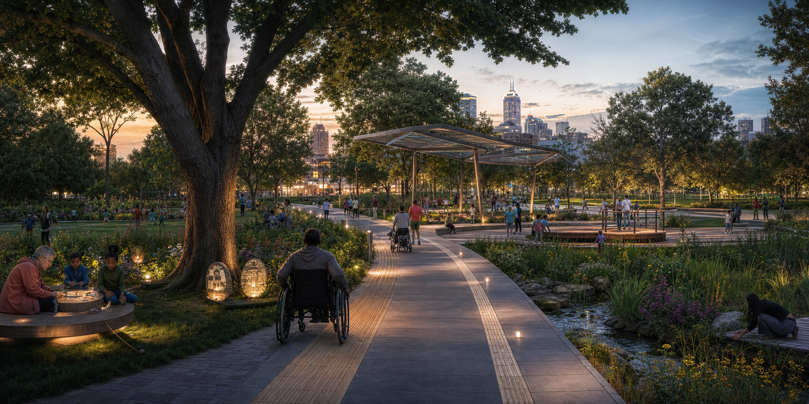
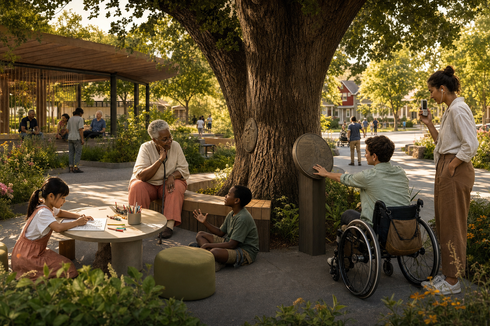
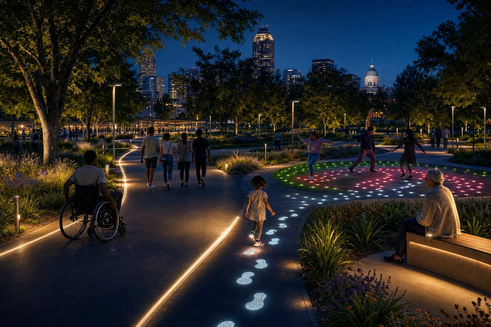

SPECULATIVE DESIGN · FUTURE VISION · EXPERIENCE CONCEPT
Parks that remember, respond, and include.
How might parks evolve over the next 20 years as cities grow denser, climate becomes less predictable, and technology becomes embedded in everyday life, without losing what makes public space human?

A VIBRANT, HAPPY, HEALTHY INDIANAPOLIS
The challenge was not to make parks more futuristic. It was to make their future more equitable.
Indy Parks asked for actionable ideas that could engage different generations through play, aesthetics, acoustics, maintenance, safety, existing technology, and community collaboration.
CLIENT VISION · INDY PARKSWelcome all residents, regardless of race, gender, socio-economic status, ability, or identity, to connect to nature, to the community, and to themselves.
Not one average park-goer
Visual, acoustic, social
Useful, legible, maintainable
Shared ownership over time
SIGNALS & TENSIONS
The future was not one prediction. It was a set of pressures parks may need to hold at once.
These signals framed the concept space. They are prompts for exploration, not claims that the sprint forecast one inevitable future.
Shade, water, resilient planting, and changing seasonal use.
Low-pressure ways to be near others without forced interaction.
Responsive infrastructure that stays optional and understandable.
Residents shape programming, stories, and long-term relevance.
Nature is active infrastructure, not decorative scenery.
Different bodies, senses, budgets, and energy levels belong.
Ecology, shade, water, and public life reinforce one another.
Light, sound, and paths respond while participation stays voluntary.
Local organizations and residents shape what is remembered and programmed.
A DAY IN THE PARK · FICTIONAL COMPOSITE
Meet Maya. The park adapts without deciding who she is.
Maya is a fictional composite created to make the near-future experience tangible, not a research participant or predictive persona.
Maya chooses the level route herself. Tactile edges, shade, and frequent seating are permanent infrastructure, not personalized exceptions.
She listens through the physical marker, reads a transcript, and leaves a short reply without creating an account.
She sits inside the social field. Others animate the path while steady navigation lighting preserves a clear way home.
CONCEPT DESIGN PROCESS · TWO WEEKS
From weak signals to a coherent experience vision.
- 01DAYS 01-02Signals & tensions
Frame social, environmental, technological, access, and stewardship shifts.
- 02DAYS 03-05Future scenarios
Imagine living-system, responsive, and community-held park futures.
- 03DAYS 06-08Experience vision
Design behaviors, rituals, discovery, belonging, and relationships with place.
- 04DAYS 09-10Concept artifacts
Make the future discussable through scenarios, vision frames, and service logic.
DESIGNING WITH EQUITY
“Open to everyone” is not the same as usable by everyone.
Instead of inventing a single persona, we stress-tested the ideas through common access conditions. Choose a lens to see how the design response changes.
These are design lenses, not claims about research participants.Participation cannot begin with a download.
A phone, data plan, account, or QR code should never be the only entrance to the experience.
Let movement, touch, signage, and staffed moments work independently; make digital layers optional.
THE LEAD CONCEPTS
Two ways for the park to become an active host.
Memory Park connects people across time. Night Park connects people through movement. Neither requires participation to look the same for everyone.
WHERE STORIES ARE SAFE, SOUND, AND WAITING TO BE FOUND
Give a memory a place to live.
Visitors connect a story to a tree, bench, or sapling. It can be experienced now or intentionally delivered to a chosen person in the future, turning a park object into an intergenerational anchor.
Tree, bench, garden, or shared object
Voice, text, drawing, or video
Now, a season, or years later

MOVE TO THE RHYTHM · LIGHT UP THE NIGHT
Let the path respond without demanding performance.
Pressure and motion activate light across paths, gathering areas, and surrounding trees. People can dance, walk, roll, tap, rest, watch, or follow a quieter illuminated route.
No app, ticket, or fixed starting point
Calm trail or playful responsive field
Individual inputs build a shared scene

EXPERIENCE BLUEPRINT
The visible moment only works when an invisible system supports it.
The blueprint connects intimate participation to access, operations, maintenance, consent, and community ownership.
Core safety, access, nature, and social use cannot depend on a screen, account, sensor, or perfect maintenance day.
SPECULATIVE ARTIFACTS · 2035
Small evidence from a world where the park is already real.
Your story is planted.
- FORMAT
- Voice + transcript
- RETURN
- Next summer
- CONTROL
- Change or remove anytime
Quiet light. Clear paths. No surprise sound.
Participation is broader when watching counts.
Next cycle: add two seated inputs, extend Spanish-language memory prompts, and preserve the quiet edge of the responsive field.
These artifacts are post-sprint worldbuilding. They make implications discussable; they are not shipped materials or measured outcomes.
FROM INSTALLATION TO PUBLIC SERVICE
The concept only works if it remains inclusive after launch day.
Equity also means operational durability. The experience needs ownership, maintenance, moderation, accessibility review, and community partners who can keep it culturally relevant.
Every core action has a non-phone path.
Watching and resting count as participation.
Instructions, exits, and boundaries stay visible.
Design for repair, moderation, and handoff.
Partners shape programming and local stories.
The park still works when technology rests.
SPRINT OUTCOME
A first-prize strategy for parks that remember, respond, and welcome more people in.
The sprint produced two lead concepts, supporting explorations, scenarios, precedent research, audience and context framing, and a more expansive definition of participation. It did not validate a built park or measure public impact; the result was a recognized concept direction and a stronger set of questions for feasibility and community co-design.
REFLECTION
The future of public space is not one spectacular interaction. It is more people feeling that the space includes them.
This sprint taught me to design participation as a spectrum: active or quiet, physical or digital, individual or shared, spontaneous or carried across generations.